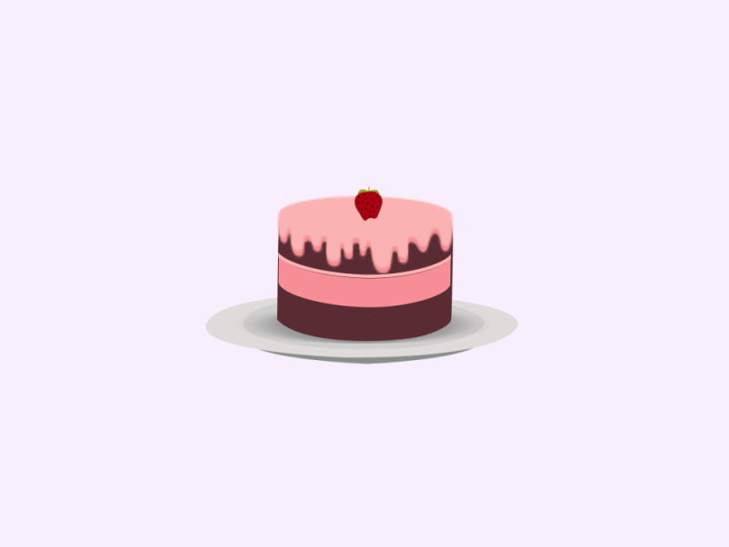

Sweat dreams
- Главная
- Десерты
- Рулет
- Доставка
- Контакты
- бисквитные торты
- слоеные торты
- песочные торты
- заварные торты
- миндально-ореховые торты
- белково-сбивные торты
- сахарные торты
- вафельные торты
Торты и пирожные
кондитерское изделие, состоящее из нескольких коржей, пропитанных кремом или джемом. Сверху торт обычно украшают кремом, глазурью или фруктами. Существуют также несладкие разновидности тортов (например, печёночный торт), при этом название «торт» указывает скорее на оформление блюда: укладывание ингредиентов слоями с возможным последующим украшением верхнего слоя. В примере с печёночным тортом: поджаренные лепёшки из печёночного фарша с прослойкой из майонеза, украшенные сверху зеленью
Классификация тортов в соответствии с типом выпеченного полуфабриката.
Что можно заменить в рецепте бисквита
Сначала рассмотрим из чего состоит бисквит. Всегда есть сухие ингредиенты (как минимум 1 ингредиент из списка): мука, какао, ореховая мука, сахар, соль. Всегда есть жидкие ингредиенты (как минимум 1 ингредиент из списка): яйцо, кипяток, молоко, сок, кефир. Часто, но не всегда есть жиры: сливочное, растительное масло, шоколад, какао масло, ореховые пасты. Чтобы бисквит был воздушным, а не плотной лепешкой в рецепте используются разрыхляющие агенты: сода или разрыхлитель. Иногда эту роль выполняют только яйца.
Единственная жидкость в рецепте медовых коржей — яйца (не считая белков и жиров в составе). Белок на 90 % состоит из воды, а желток всего лишь на 50 %. Если сделаем замену,
то не сможем вмешать количество муки, указанное в рецепте. А кто это сделает, будет жаловаться, что коржи плотные и жесткие.
Часто, но не всегда есть жиры: сливочное, растительное масло, шоколад, какао масло, ореховые пасты. Чтобы бисквит был воздушным, а не плотной лепешкой в рецепте используются разрыхляющие агенты: сода или разрыхлитель. Иногда эту роль выполняют только яйца.
Совет: Малина
Сезон малины начинается в середине июне и продолжается до конца лета. В это время Вы можете приготовить десерты, коктейли, пироги и салаты с малиной. Вот продукты, с которыми малина прекрасно сочетается: абрикосы, апельсины, арахис, бадьян, ваниль, вино, гвоздика, грейпфрут, груши, ежевика заварной крем, йогурт, карамель, клубника, корица, лимон, манго, маскарпоне, миндаль, мороженое, мята, персики и нектарины, сливки, фундук, черника, шампанское, шоколад. Малиновый торт вполне может быть символом лета. Не умаляя достоинств других даров трех теплых месяцев, малина для нас – ягода особая, полная символизма. О символике малины мы рассказали здесь и дали рецепты разнообразной выпечки с малиновым вареньем.
Совет: Черника
На самом деле я чернику использую в тортах круглый год. и у меня она больше ассоциируется с зимними вкусам. Наверное, это от того, что свежие ягоды не так часто бывают в продаже, проще купить замороженные.